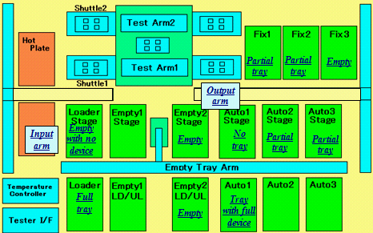

Service History
Subject: NS-8080 encountered hang up during running production
Handler Model: NS-8080
Controller: RC520
Date: 2 Sep 2009
Symptom
NS8080 encountered hang up during running production
Data taken from NS88-03 with serial number 181594. The scenario was the handler hang up (no mechanical moment) during half way running in production time, the tower light was with green light and the handler screen showing “Running”.
As we have checked the handler while it was still having hang up, please help to elaborate the handler condition in details, so that Epson will have the detail data for investigation.
Software: HMI v2.1
Factory: Epson-M
S/n: 181594
MFG: Sep 2008

The following are the observations:
1) No alarm encountered
2) Loading tray finished
3) Auto 1 Full with device (indexed to stacking area)
4) Auto 1 Stage waiting for empty tray
5) Output arm still holding 1 device on Hand D
6) Empty 2 standing by with 1 empty tray
Error Code -Error Message---------------------- Manipulator Joint -Time-------------Function-------------------- Code
F-5020 Absolute Encoder overspeed. 2 2 09/01/2009 20:59:50 SYSTEMTASK:DAEMON:0 0000
F-5020 Absolute Encoder overspeed. 2 2 09/01/2009 20:59:47 WB:InitIP:0 0000
M-3302 A output command is attempted when the Safety Door is open. 0 0 08/24/2009 06:42:30 :MONITOR:0 57466
T-4216 Servo real-time command overrun. 6 0 08/12/2009 09:26:15 SYSTEMTASK:DAEMON:0 0000
T-4216 Servo real-time command overrun. 5 0 08/12/2009 09:26:15 SYSTEMTASK:DAEMON:0 0000
T-4216 Servo real-time command overrun. 4 0 08/12/2009 09:26:15 SYSTEMTASK:DAEMON:0 0000
T-4216 Servo real-time command overrun. 3 0 08/12/2009 09:26:15 SYSTEMTASK:DAEMON:0 0000
T-4216 Servo real-time command overrun. 2 0 08/12/2009 09:26:15 SYSTEMTASK:DAEMON:0 0000
T-4216 Servo real-time command overrun. 1 0 08/12/2009 09:26:15 SYSTEMTASK:DAEMON:0 0000
T-4216 Servo real-time command overrun. 3 0 08/12/2009 09:26:15 SYSTEMTASK:DAEMON:0 0000
T-4009 Timeout error within Motion Control Module. 2 0 08/12/2009 09:26:14 COMMON:HAND_UP_WAIT:19 57581
T-4216 Servo real-time command overrun. 6 0 08/10/2009 05:03:28 SYSTEMTASK:DAEMON:0 0000
T-4216 Servo real-time command overrun. 5 0 08/10/2009 05:03:28 SYSTEMTASK:DAEMON:0 0000
T-4216 Servo real-time command overrun. 4 0 08/10/2009 05:03:28 SYSTEMTASK:DAEMON:0 0000
T-4216 Servo real-time command overrun. 3 0 08/10/2009 05:03:28 SYSTEMTASK:DAEMON:0 0000
T-4216 Servo real-time command overrun. 2 0 08/10/2009 05:03:28 SYSTEMTASK:DAEMON:0 0000
T-4216 Servo real-time command overrun. 1 0 08/10/2009 05:03:28 SYSTEMTASK:DAEMON:0 0000
T-4216 Servo real-time command overrun. 6 0 08/01/2009 07:01:50 SYSTEMTASK:DAEMON:0 0000
T-4216 Servo real-time command overrun. 5 0 08/01/2009 07:01:50 SYSTEMTASK:DAEMON:0 0000
T-4216 Servo real-time command overrun. 4 0 08/01/2009 07:01:50 SYSTEMTASK:DAEMON:0 0000
T-4216 Servo real-time command overrun. 3 0 08/01/2009 07:01:50 SYSTEMTASK:DAEMON:0 0000
T-4216 Servo real-time command overrun. 2 0 08/01/2009 07:01:50 SYSTEMTASK:DAEMON:0 0000
T-4216 Servo real-time command overrun. 1 0 08/01/2009 07:01:50 SYSTEMTASK:DAEMON:0 0000
I-2031 The subscription of Array Variable is out of the user-defined range. 0 0 07/27/2009 12:39:36 COMMON:TASK_DUMP:27 65460
T-4216 Servo real-time command overrun. 6 0 07/27/2009 12:39:35 SYSTEMTASK:DAEMON:0 0000
T-4216 Servo real-time command overrun. 5 0 07/27/2009 12:39:35 SYSTEMTASK:DAEMON:0 0000
T-4216 Servo real-time command overrun. 4 0 07/27/2009 12:39:35 SYSTEMTASK:DAEMON:0 0000
T-4216 Servo real-time command overrun. 3 0 07/27/2009 12:39:35 SYSTEMTASK:DAEMON:0 0000
T-4216 Servo real-time command overrun. 2 0 07/27/2009 12:39:35 SYSTEMTASK:DAEMON:0 0000
T-4216 Servo real-time command overrun. 1 0 07/27/2009 12:39:35 SYSTEMTASK:DAEMON:0 0000
F-5044 Speed error overflow in the High-power state. 6 1 07/26/2009 09:38:40 SYSTEMTASK:DAEMON:0 0000
F-5044 Speed error overflow in the High-power state. 5 1 07/26/2009 09:38:40 SYSTEMTASK:DAEMON:0 0000
F-5044 Speed error overflow in the High-power state. 6 1 07/26/2009 09:38:37 WB:InitIP:0 0000
T-4216 Servo real-time command overrun. 6 0 07/18/2009 10:19:19 SYSTEMTASK:DAEMON:0 0000
T-4216 Servo real-time command overrun. 5 0 07/18/2009 10:19:19 SYSTEMTASK:DAEMON:0 0000
T-4216 Servo real-time command overrun. 4 0 07/18/2009 10:19:19 SYSTEMTASK:DAEMON:0 0000
T-4216 Servo real-time command overrun. 3 0 07/18/2009 10:19:19 SYSTEMTASK:DAEMON:0 0000
T-4216 Servo real-time command overrun. 2 0 07/18/2009 10:19:19 SYSTEMTASK:DAEMON:0 0000
T-4216 Servo real-time command overrun. 1 0 07/18/2009 10:19:19 SYSTEMTASK:DAEMON:0 0000
T-4216 Servo real-time command overrun. 6 0 07/17/2009 20:58:20 SYSTEMTASK:DAEMON:0 0000
T-4216 Servo real-time command overrun. 5 0 07/17/2009 20:58:20 SYSTEMTASK:DAEMON:0 0000
T-4216 Servo real-time command overrun. 4 0 07/17/2009 20:58:20 SYSTEMTASK:DAEMON:0 0000
T-4216 Servo real-time command overrun. 3 0 07/17/2009 20:58:20 SYSTEMTASK:DAEMON:0 0000
T-4216 Servo real-time command overrun. 2 0 07/17/2009 20:58:20 SYSTEMTASK:DAEMON:0 0000
T-4216 Servo real-time command overrun. 1 0 07/17/2009 20:58:20 SYSTEMTASK:DAEMON:0 0000
T-4216 Servo real-time command overrun. 3 0 07/17/2009 20:58:20 SYSTEMTASK:DAEMON:0 0000
T-4216 Servo real-time command overrun. 6 0 07/12/2009 10:33:08 SYSTEMTASK:DAEMON:0 0000
T-4216 Servo real-time command overrun. 5 0 07/12/2009 10:33:08 SYSTEMTASK:DAEMON:0 0000
T-4216 Servo real-time command overrun. 4 0 07/12/2009 10:33:08 SYSTEMTASK:DAEMON:0 0000
T-4216 Servo real-time command overrun. 3 0 07/12/2009 10:33:08 SYSTEMTASK:DAEMON:0 0000
Action
3 Sep 2009 email from Ogata
Currently EPSON is still investigating of this issue, please wait for a while.
I just would like to check with you regarding situation of this hung up issue.
1. Does this hung up happen at 8site with Hot mode and it's happen after tray exchange?
Probably this issue due to software issue.
You may need to upgrade the software to Ver2.5.
Because Ver2.5 already have solved the real time command overrun error which is you sent us the spel error log.
3 Sep 2009 email from EEMS KateLeong
We are not sure the 8 site condition, because we use NS8080 mostly on quad site setup. And this hung up is not happening every time after tray change, only intermittently. So far we have not much data on the hang-up issue as this time was the 1st time we captured and gathered data. I will continue to monitor and gather more data.
We may try the Ver. 2.5 HMI on 1 handler to see whether it can resolve the hang-up issue. Please arrange with Getech to have 1 machine upgrade.
HMI Ver 2.5 Release Note
-------------------------------------------------------------------------------
<Ver2.5> 2009/06/01
-------------------------------------------------------------------------------
***** Added Points ***************************
(1)Addition of offset to Tray form.
(2)Addition of EPSON ATC.
***** Modified Points ************************
(1)Modification of RTC error.
RTC error is Real Time Command error.
Cause
NS-8000 series HMI Ver 2.5 will solve Real Time Command error.
( T-4216 Servo real-time command overrun. SYSTEMTASK:DAEMON:0 0000 )